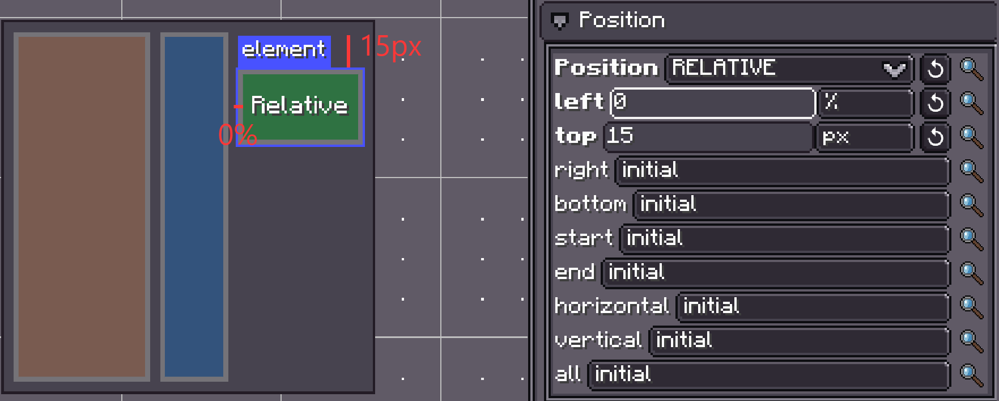
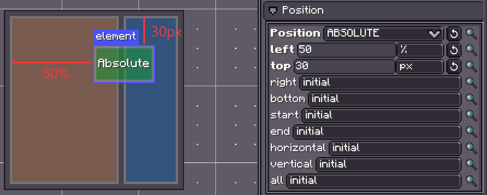
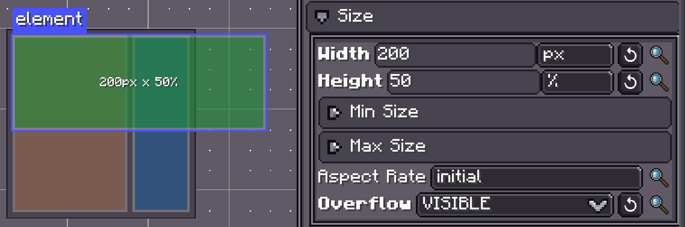
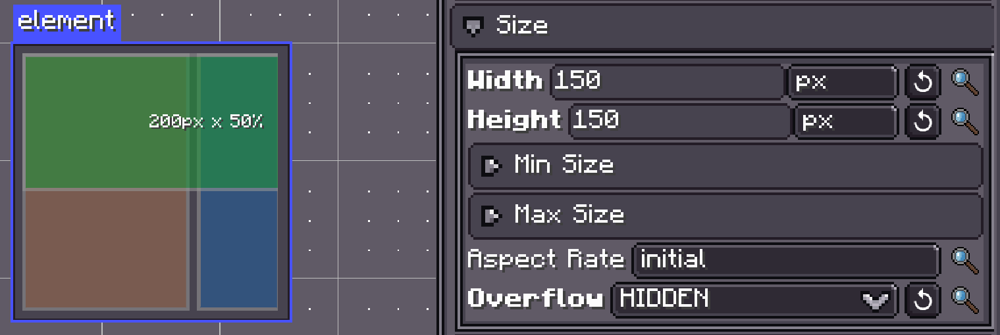
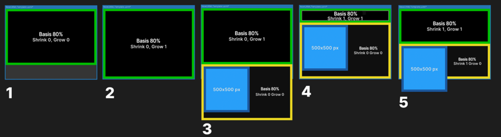
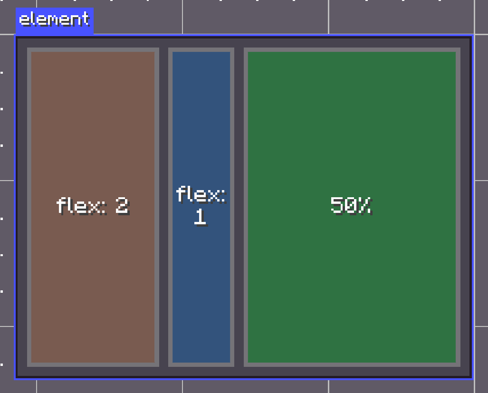
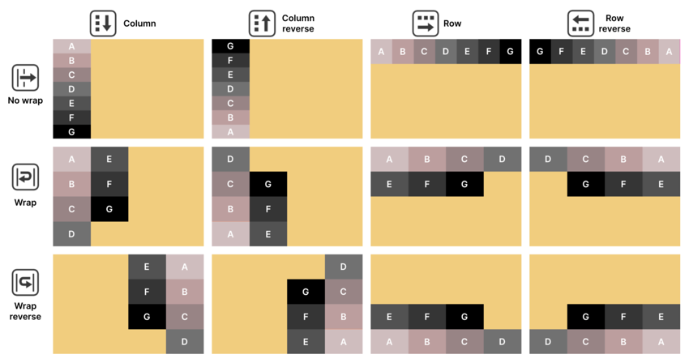
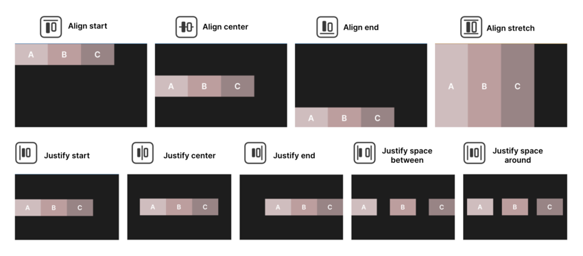
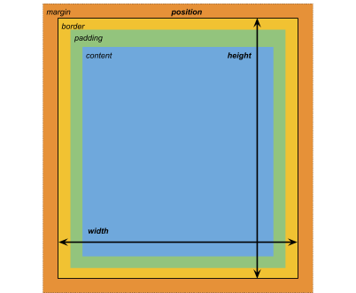

布局
LDLib2 UI 布局基于 Taffy 布局引擎 构建。目前实现了 CSS Block、Flexbox 和 CSS Grid 布局算法。
Taffy 是一个嵌入式布局系统，被广泛应用于流行的 UI 框架中。 它不是 UI 框架，也不负责任何渲染工作。 它唯一的职责是计算元素的尺寸和位置。
LDLib2 采用基于 FlexBox / Grid 的布局模型，让你能够以灵活且可预测的方式描述复杂的 UI 结构。
设置布局属性
每个 UIElement 都拥有一个由 Taffy 支持的布局对象。
你可以根据偏好和使用场景，通过多种方式配置布局属性。
除了以下示例外，布局属性还可以通过 LSS (LDLib Style Sheet) 定义，这对于将布局逻辑与 UI 结构分离特别有用。
var element = new UIElement();
// Set layout directly
element.getLayout()
.flexDirection(FlexDirection.ROW)
.width(150)
.heightPercent(100)
.marginAll(10)
.paddingAll(10);
// Set layout using a chaining lambda
element.layout(layout -> layout
.flexDirection(FlexDirection.ROW)
.width(150)
.heightPercent(100)
.marginAll(10)
.paddingAll(10)
);
// Set layout via stylesheet (LSS)
element.lss("flex-direction", "row");
element.lss("width", 150);
element.lss("height-percent", 100);
element.lss("margin-all", 10);
element.lss("padding-all", 10);
let element = new UIElement();
// Set layout directly
element.getLayout()
.flexDirection(FlexDirection.ROW)
.width(150)
.heightPercent(100)
.marginAll(10)
.paddingAll(10);
// Set layout using a chaining lambda
element.layout(layout -> layout
.flexDirection(FlexDirection.ROW)
.width(150)
.heightPercent(100)
.marginAll(10)
.paddingAll(10)
);
// Set layout via stylesheet (LSS)
element.lss("flex-direction", "row");
element.lss("width", 150);
element.lss("height-percent", 100);
element.lss("margin-all", 10);
element.lss("padding-all", 10);
学习 Flex 布局
Info
如果你已经熟悉 Flexbox，Taffy 布局对你来说会非常直观。 如果不熟悉，我们建议阅读官方的 Taffy 文档 获取完整说明。
为了便于入门，本章重点介绍 LDLib2 UI 中最常用的 Flex 概念。
UI 元素与层级结构
在 LDLib2 UI 中，界面由 UI 元素 (UIElement) 组成。
- UI 元素代表一个可视化容器，如面板、按钮、文本框或图像。
- UI 元素可以包含其他 UI 元素，形成 UI 层级结构（也称为布局树）。
复杂的界面通过将多个 UI 元素组合成嵌套的层级结构来构建，并在不同层级应用布局和样式规则。
flowchart LR
R([UIElement])
R --- A([UIElement])
A --- A1([Label])
A --- A2([Toggle])
A --- A3([Slider])
R --- B([UIElement])
B --- B1([Label])
B --- B2([Toggle])
linkStyle 0,1,2,3,4,5,6 stroke:#9aa3ab,stroke-width:2px,stroke-dasharray:6 4;定位 UI 元素
设计 UI 布局时，可以将每个屏幕视为水平或垂直排列的矩形容器集合。
将布局分解为逻辑区块，然后使用子容器来细化每个区块以组织内容。
定位模式
Taffy 支持两种主要的定位模式：
相对定位（默认）
元素参与其父容器的 Flexbox 布局。
- 子元素根据父元素的 Flex Direction 进行排列
- 元素的尺寸和位置会动态响应：
- 父元素的布局规则（padding、对齐、间距）
- 元素自身的尺寸约束（width、height、min/max size）
如果布局约束发生冲突，布局引擎会自动解决。 例如，比容器宽的元素可能会溢出。
绝对定位
元素相对于其父容器定位，但不参与 Flexbox 布局计算。
- Flex 属性如 Grow、Shrink 或对齐会被忽略
- 元素可能与其他内容重叠
- 位置通过偏移量如
Top、Right、Bottom和Left控制
{kind=link}

{kind=link}

尺寸设置
UI 元素默认是容器。
- 没有明确的尺寸规则时，元素可能会扩展以填充可用空间，或收缩到其内容的尺寸
Width和Height定义元素的基础尺寸Min和Max值限制元素可以增长或收缩的程度- 如果设置了
Aspect Rate，一个维度将由另一个维度决定 Overflow控制元素内容的裁剪。默认值是visible，表示元素内容不会被裁剪到元素边界。如果将 overflow 设置为 hidden，元素内容将被裁剪到元素的内容边界。- 尺寸可以用像素或百分比表示
这些尺寸规则与 Flexbox 设置相互作用，共同决定最终的布局。
{kind=link}

{kind=link}

Flex 设置
Flex 设置影响使用相对定位时元素如何增长或收缩。建议你通过实验元素来亲身了解它们的行为。
Flex Basis
定义在应用 Grow 或 Shrink 之前元素的初始尺寸。
Flex Grow
Flex Grow > 0允许元素扩展并占用可用空间- 值越高，获得的可用空间份额越大
Flex Grow = 0阻止元素扩展超过基础尺寸
Flex Shrink
Flex Shrink > 0允许元素在空间有限时收缩Flex Shrink = 0阻止收缩，可能导致溢出
具有固定像素尺寸的元素不会响应 Grow 或 Shrink。
{kind=link}

上面的示例展示了 Basis 如何与 Grow 和 Shrink 选项配合工作：
- Basis 为 80% 的绿色元素占据 80% 的可用空间。
- 将 Grow 设置为 1 允许绿色元素扩展到整个空间。
- 添加黄色元素后，元素溢出空间。绿色元素恢复到占据 80% 的空间。
- 将 Shrink 设置为 1 使绿色元素收缩以适应黄色元素。
在这里，两个元素的 Shrink 值都是 1。它们等量收缩以适应可用空间。
Flex
Flex = 1 等同于 Flex Grow = 1 和 Flex Shrink = 1，用于同时设置 Flex Grow 和 Flex Shrink。
{kind=link}

width: 200px。
最右侧的元素设置 width: 50%。因此，最左侧和中间元素的剩余空间为 100px。根据它们的 flex 值，它们按 2:1 的比例分配剩余空间。
💡 元素尺寸的计算方式
使用相对定位时，布局引擎按以下顺序确定元素尺寸：
- 从
Width和Height计算基础尺寸 - 检查父容器是否有额外空间或溢出
- 使用
Flex Grow分配额外空间 - 如果空间不足，使用
Flex Shrink减小尺寸 - 应用
Min/Max尺寸和Flex Basis等约束 - 应用最终解析的尺寸
Flex Direction 和 Flex Wrapping
Flex Direction控制子元素是按行还是按列布局Flex Wrap控制元素是保持在单行还是换行到额外的行或列
子元素遵循 UI 层级结构中定义的顺序。
{kind=link}

对齐
对齐设置控制子元素在容器内的定位方式。
Align Items
沿交叉轴（垂直于 Flex Direction）对齐元素：
Justify Content
控制沿主轴的间距：
Flex Grow 和 Shrink 值影响空间的分配方式。
Align Self
允许单个元素覆盖父元素的对齐规则。
Align Content
控制多行或多列 flex 项目沿交叉轴的对齐方式。
Note
Align Content 仅在以下情况下生效：
- 容器允许换行（
flex-wrap: wrap） - 存在多行子元素
{kind=link}

Margin 和 Padding
LDLib2 UI 遵循类似 CSS 的盒模型：
- Content：元素的实际内容
- Padding：内容与边框之间的空间
- Border：元素周围的可选边界（避免使用）
- Margin：元素外部的空间，将其与其他元素分隔开
{kind=link}

Grid 布局
Grid 类似于 CSS Grid。你可以创建网格布局并定位其子元素。